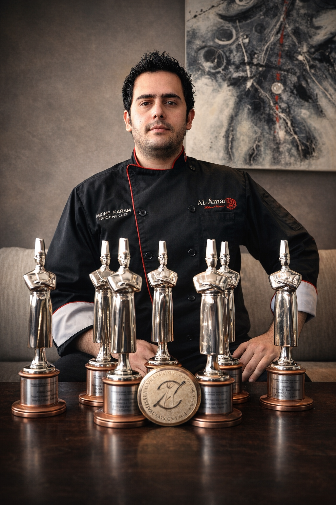

التشخيص التشغيلي
للشركات التي تشعر بالضغط لكنها لا تستطيع تحديد ما إذا كانت المشكلة في العرض، سير العمل، الأنظمة، التنفيذ، أو نمط اتخاذ القرار.
ممارسة هيكلة تشغيلية — لبنان
Chassis تدخل إلى الشركات غير الواضحة، التي تعمل بردّات فعل وتعتمد على المؤسّس، وتُعيد تنظيم طريقة تشغيلها وتنفيذها وعملها.
تشخيص تشغيلي. هيكلة أعمال. بنية تنفيذية. شراكة تشغيلية. أربع طبقات باتجاه واحد: شركة قادرة على العمل من دون أن تنهار تحت ضغطها الداخلي.
معظم الشركات لا تعاني من مشكلة تسويق.
هي تعاني من مشكلة بنية.
الوضوح التشغيلي يأتي قبل النمو.
للشركات التي تشعر بالضغط لكنها لا تستطيع تحديد ما إذا كانت المشكلة في العرض، سير العمل، الأنظمة، التنفيذ، أو نمط اتخاذ القرار.
للمؤسسين والمشغّلين الذين يملكون خبرة وإمكانية، لكن لا يملكون عرضاً واضحاً، تسعيراً منظماً، تموضعاً دقيقاً، أو اتجاه عمل واضح.
للشركات التي تملك اتجاهاً واضحاً وتحتاج إلى موقع، CRM، أنظمة استقبال، SOPs، أو أدوات تشغيلية تدعم الطريقة التي يعمل بها العمل فعلياً.
للعملاء الذين لديهم بنية قائمة ويحتاجون إلى تصحيح ومتابعة ومساءلة تشغيلية مستمرة حتى لا تنهار البنية بعد التنفيذ.
تصبح الشركة قادرة على معرفة ما تبيعه، لمن تبيعه، وكيف تشرحه من دون تشويش.
لا تبقى كل القرارات مرتبطة بحضور المؤسس في كل خطوة. النظام يبدأ بحمل جزء من الوزن.
تصبح سير العمل، المسؤوليات، والأنظمة واضحة بما يكفي ليتم التنفيذ باستمرار من دون إطفاء حرائق يومية.
تتوقف الشركة عن العمل بالذاكرة وتبدأ بالعمل بالبنية. نفس المعيار، كل مرة، من دون أن يحمل المؤسس كل شيء يدوياً.
دراسة حالة
هيكلة أعمال / بناء عرض / بنية تنفيذية
من خبرة شيف تنفيذي إلى اتجاه واضح في الاستشارات المطبخية.
نقطة البداية لم تكن مشكلة تسويق. كانت مشكلة بنية.
كانت هناك خبرة، مصداقية، وإمكانية، لكن من دون عرض استشاري محدد، أو هيكل تسعير، أو تموضع واضح، أو نظام يدعم الاتجاه.
Chassis نظّمت نموذج الاستشارات، وضّحت التموضع، بنت الأساس الرقمي، ونظّمت اتجاه التنفيذ خلف العمل.
عروض استشارية محددة، منطق تسعير واضح، تموضع أقوى، وبنية رقمية كاملة مبنية حول التنفيذ.
عرض كل دراسات الحالة

لم يكن هناك عرض استشاري واضح، ولا منطق تسعير، ولا تموضع. تم تنظيم الاتجاه إلى استشارات مطبخية واضحة مع أساس رقمي يدعمها.

إعادة تنظيم الحضور الرقمي باتجاه مصداقية أقوى، عرض أوضح، وطريقة أكثر تنظيماً لإظهار ما يقدمه العمل.
تشخيص ← هيكلة ← تنفيذ ← تحسين
ابدأ بالتشخيص
مكالمة التشخيص موجودة لفهم العمل، تحديد نقطة الضغط الحقيقية، ومعرفة ما إذا كانت Chassis هي الخيار المناسب.